Плагин 1C:RSV подключает ИИ-ассистентов (Claude Code, Cursor, Windsurf)
напрямую к вашей конфигурации 1С. ИИ видит структуру, читает код
и пишет готовые решения уровня Senior — за секунды.
3 минуты — и вы поймёте, что именно получает ИИ при работе с вашей 1С-конфигурацией.
Видео доступно без VPN — работает в России
Реальный кейс
ИИ пишет код в типовой ЗУП за 1 час
Задача уровня Senior-разработчика (2–3 дня вручную). Записано в реальном времени.
VK Видео
YouTube
Миссия
КонфигурацияЗУП 3.1.36.75 (типовая)
ЦельРасчёт зарплаты «на лету» — тот же движок, что в документе, но без записи в базу
СложностьВысокая — МенеджерРасчетаЗарплаты: 22 914 строк, 620 методов
Порог входаТолько Senior ЗУП (мидл застрянет, джуниор не справится)
Результат352 строки рабочего кода, 3 ошибки найдены и исправлены
67 000
строк кода проанализировано
352
строки написано
~1 ч
вместо 2–3 дней
41
вызов MCP-инструментов
99%
экономия токенов
Слайды из презентации — нажмите для просмотра
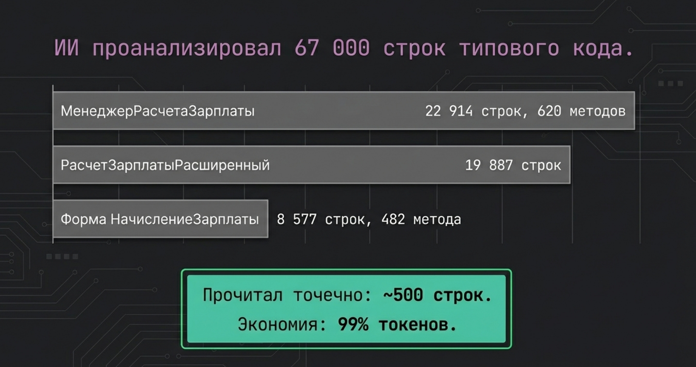
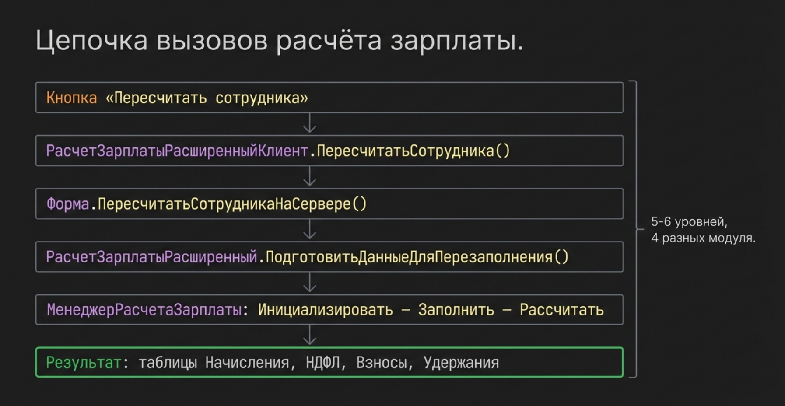
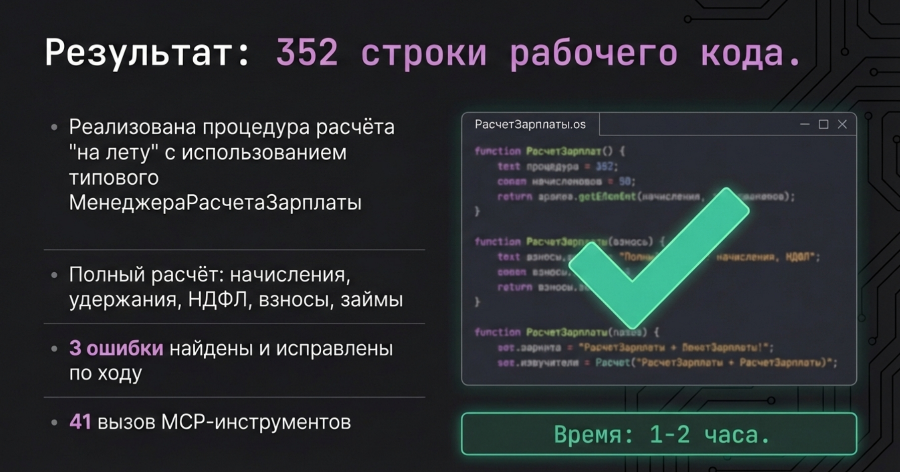
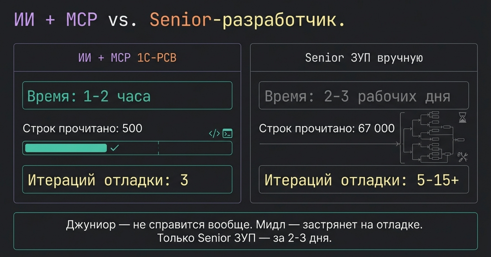
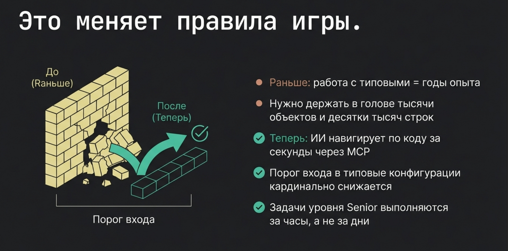
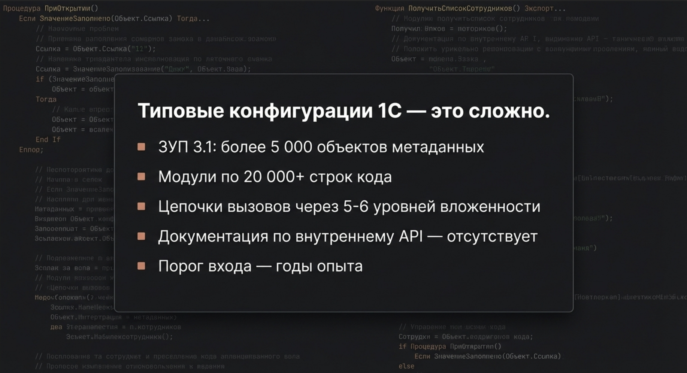
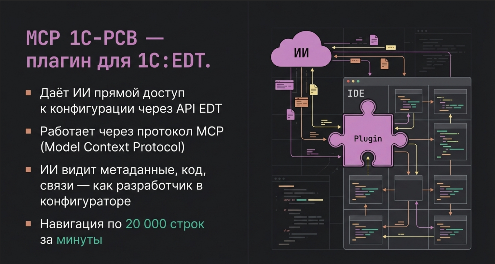
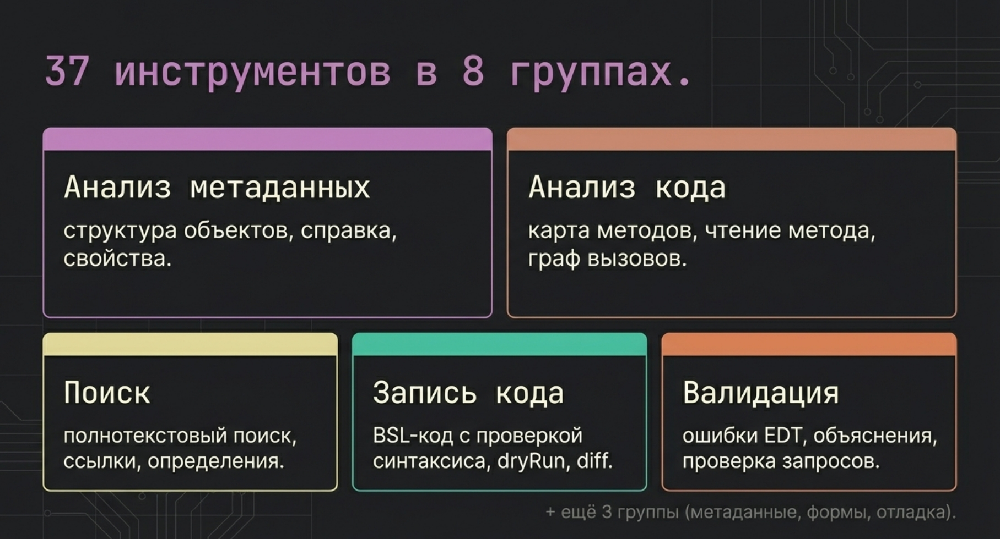
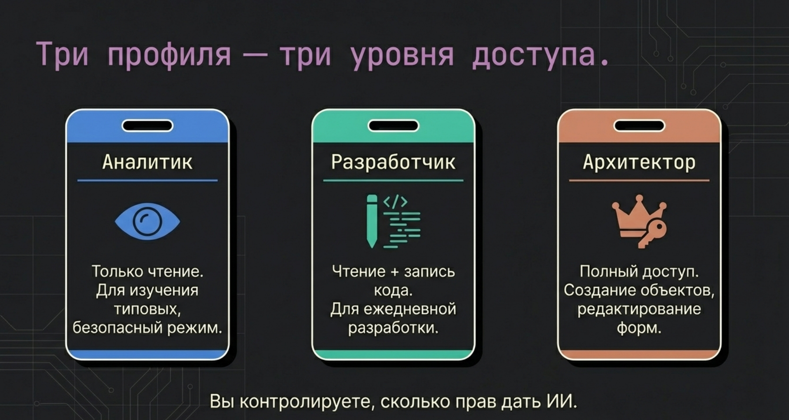
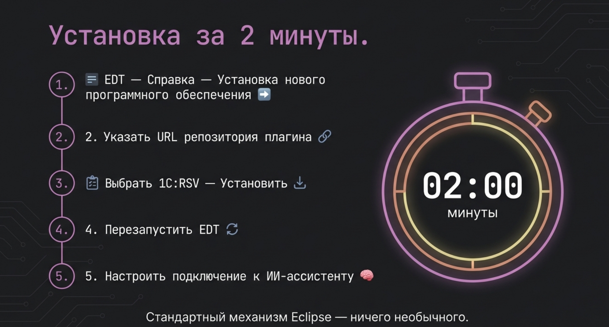
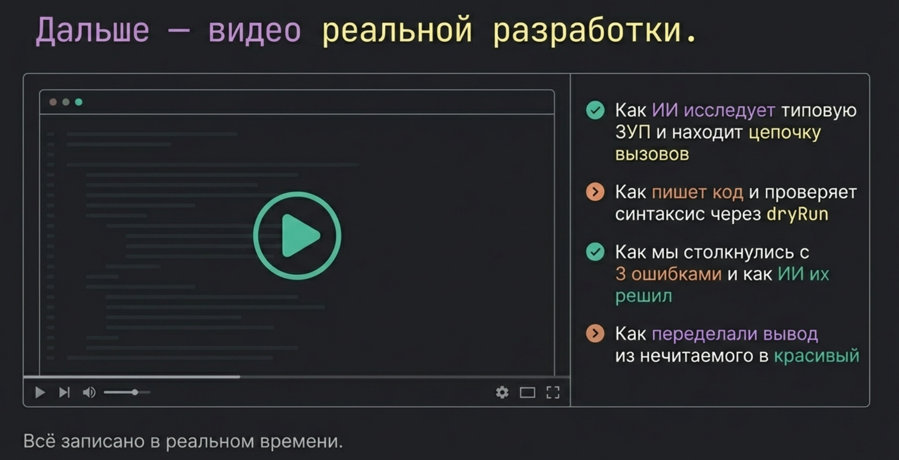
Задача
Проанализировать цепочку вызовов расчёта зарплаты в типовом документе «Начисление зарплаты» (ЗУП 3.1.36.75) и написать обработку, выполняющую полный расчёт зарплаты «на лету» — без создания документа и без записи в базу данных.
Ключевая сложность: итоговый код выглядит простым — всего 3 вызова. Но чтобы узнать КАКИЕ вызовы нужны и КАКИЕ настройки передать — нужно перекопать МенеджерРасчетаЗарплаты (22 914 строк, 620 методов), РасчетЗарплатыРасширенный (19 887 строк) и форму документа (8 577 строк).
Использованные MCP-инструменты
Инструмент
Назначение
Вызовов
read_method_source
Точечное чтение методов из модулей 20 000+ строк
12
search_in_code
Поиск вхождений по коду конфигурации
7
write_module_source
Запись кода с проверкой синтаксиса (dryRun)
8
get_module_structure
Карта методов модулей
3
ai_context
Комплексный сбор контекста по объекту
2
Остальные (6 инстр.)
get_object_details, get_form_image, diff_module и др.
Ошибка 1: «Преобразование значения к типу Булево» — НастройкиНДФЛ.ОкончательныйРасчет не инициализируется типовым менеджером, в документе это делается на уровне формы. Добавлены недокументированные настройки.
Ошибка 2: «Заполнение НастройкиРасчета.Сотрудники обязательно» — переработана процедура с формированием массивов Сотрудников и ФизическихЛиц.
Вывод: MCP 1С-РСВ критически важен для работы с типовыми конфигурациями. Задача решена за ~41 вызов инструментов вместо чтения десятков тысяч строк. Мидл-разработчик с ИИ + MCP решает задачу, которая раньше требовала Senior ЗУП с годами опыта.
Проблема
Почему ИИ плохо работает с 1С без RSV?
Современные ИИ-ассистенты мощны, но слепы внутри 1С:EDT. Без прямого доступа к структуре конфигурации они работают вслепую.
🙈
ИИ не видит структуру конфигурации
Тысячи объектов метаданных, реквизиты, формы, модули — ИИ не знает, что есть в вашей 1С, и вынужден угадывать названия.
📚
Миллионы строк кода не влезают в контекст
ERP, УНФ, УХ содержат миллионы строк BSL-кода. Загрузить всё в ИИ невозможно — нужна умная навигация, а не тупой поиск.
💸
Токены тратятся впустую на «шум»
Без контекстного фильтра ИИ получает нерелевантные данные и тратит дорогие токены на разбор «шума» вместо решения задачи.
Решение
Интеллектуальный мост между ИИ и 1С:EDT
1C:RSV встраивает MCP-сервер прямо в среду разработки. ИИ-ассистент подключается по стандартному протоколу и получает доступ ко всей семантической базе знаний, которую EDT уже построил при анализе проекта.
✓Без RAG-систем и векторных БД — используем готовые индексы EDT
✓Точная выжимка данных — ИИ получает только нужное, без лишнего «шума»
✓Экономия токенов в десятки раз — умная фильтрация на стороне EDT
✓Без SaaS-посредников — плагин работает прямо в IDE, не требует внешних серверов или подписок
✓JSON-формат — нативный для ИИ, без потерь при парсинге
0
Инструментов MCP
0
Java-классов
0
Профиля работы
0
Внешних зависимостей
Роли
Три профиля — для каждой роли
Первое на рынке решение с чётким разделением инструментов по ролям. Каждый получает только то, что ему нужно.
Профиль: Разработчик
ИИ — полноценный Senior-разработчик
Не помощник. Не советчик. Самостоятельный разработчик, пишущий production-код уровня Senior.
С 1C:RSV ИИ перестаёт угадывать — он видит всю конфигурацию изнутри.
Изучает структуру объектов, читает BSL-код, находит паттерны в типовых конфигурациях
(БСП, ERP, УНФ) и пишет готовые решения Enterprise-уровня по одному промту —
без технического задания, без указания методов, без помощи человека.
★Пишет готовый BSL-код по одному промту — без ТЗ и без указания методов
★Находит паттерны в БСП/ERP и воспроизводит их по стандартам 1С
★Автоматически проверяет и исправляет ошибки валидации после записи
★Анализирует цепочки вызовов (get_method_call_hierarchy) — видит побочные эффекты
★Dry-run перед записью — полная безопасность изменений
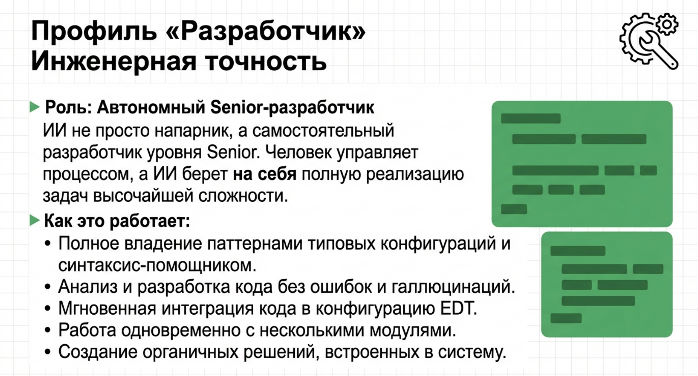
👨💻
Результаты из кейсов
Реальные задачи, реальные цифры
Сложность задачEnterprise
Заполнение по спецификациям2 строки кода
Паттерн БСП «с нуля»1 промт
Автоисправление ошибок✓ Автомат.
Сложный багза 2 мин.
Профиль: Аналитик
Аналитик стал независим от программистов
ИИ изучает конфигурацию самостоятельно — без привлечения разработчика.
С 1C:RSV аналитик получает ИИ-ассистента, который понимает конфигурацию как опытный эксперт.
ИИ самостоятельно изучает реализацию объектов, анализирует взаимосвязи, строит документацию
на основе живого кода и реальных метаданных — и отвечает на вопросы без участия разработчика.
Даже там, где встроенная справка 1С молчит.
★get_form_image: визуализация любой формы в PNG — структура реквизитов за секунду
★get_object_help: встроенная справка 1С + анализ живого кода одновременно
★Документация системы «на лету» по реальным метаданным — не по устаревшим описаниям
★Полное понимание типовых конфигураций без знания BSL
★Документация платформы API 1С — 4 специализированных инструмента
📊
Профиль: Аналитик
Понимание без программирования
Визуализация форм (PNG/JSON)✓ Уникально
Встроенная справка 1С✓ Есть
Документация платформы API✓ 4 инструмента
Требует знания BSL✗ Не нужно
Независимость от разработчика✓ Полная
Профиль: Архитектор
Прямое конструирование прикладного решения
ИИ не просто пишет текст — он создаёт и модифицирует объекты конфигурации.
Архитектор переводит взаимодействие ИИ и 1С на принципиально новый уровень —
не просто написание кода, а прямое создание и модификация объектов конфигурации
с многоуровневой системой защиты. Инструменты полностью работоспособны в базовых сценариях
и активно развиваются.
★Создание объектов метаданных напрямую через ИИ-ассистента
★Динамическое добавление реквизитов и элементов форм
★Трёхуровневая защита: группы доступа + dry-run + подтверждение
★Активное R&D направление — быстро развивается
🏛️
Профиль: Архитектор
Управление структурой конфигурации
Уровней защиты3
Создание объектов✓ Есть
Управление формами✓ Есть
Dry-run✓ Обязателен
СтатусАктивный R&D
🚀 Перспективное направление
Профиль Архитектор — первый на рынке 1С-MCP инструментарий для прямого создания объектов через ИИ. Активно тестируется и развивается.
Кейсы
Реальные задачи. Реальные результаты
Нажмите на кейс, чтобы прочитать подробное описание — что делал ИИ, какие инструменты использовал и чего добился.
Кейс 01 · УНФ · Производство
Автозаполнение материалов по спецификациям в документе Производство
✅ Одна фраза → готовое решение
⚡ 16 вызовов MCP-инструментов
🎯 Результат: 2 строки кода
ИИ самостоятельно нашёл метод заполнения по спецификациям в УНФ, проанализировал структуру документа (42 реквизита, 11 ТЧ!) и добавил функционал. Никаких указаний на методы или файлы.
Реализация «Длительных операций» по паттерну БСП без знания API
✅ 100% соответствие стандартам 1С
⚡ 17 вызовов MCP-инструментов
🎯 Автоисправление ошибок валидации
ИИ нашёл 5 эталонных примеров БСП в типовой конфигурации, изучил паттерн и написал полный код расширения — на 100% соответствующий стандартам 1С. Затем сам исправил ошибки валидации.
Консолидация складской номенклатуры: склад vs. производство
✅ Полный цикл: анализ → архитектура → код
⚡ Enterprise-уровень сложности
🎯 Автоматическая пересортица запасов
500 3D-принтеров, два разных учёта одного материала. ИИ предложил архитектурное решение через механизм «Пересортица запасов», реализовал полный трёхкомпонентный функционал с откатом.
Открытый стандарт MCP (Model Context Protocol) обеспечивает подключение к любому современному ИИ-инструменту.
🧠Claude Code
⚡Cursor
🌊Windsurf
💙VS Code + Copilot
🔵Any MCP Client
Сравнение
1C:RSV против аналогичных решений
Объективное сравнение по ключевым метрикам. Данные получены путём прямого анализа плагинов.
Критерий
1C:RSV
Аналогичные решения
Инструментов MCP
37+42%
~26
Редактирование кода
✓
✗
Редактирование метаданных и форм
✓
✗
Визуализация форм (PNG/JSON)
✓ Уникально
✗
AI-контекст (ai_context)
✓
✗
Документация платформы API
✓ 4 инструмента
Частично (1)
Пагинация (offset/limit)
✓
✗
Профили по ролям
✓ 3 профиля
✗
Внешние зависимости
0
3+
Размер кода (компактность)
Компактнее в 2×
В 2× больше кода
Семантические подсказки при ошибках
✓
✗
Больше инструментов — это только начало
Даже те инструменты, которые есть в аналогичных решениях, в 1C:RSV реализованы глубже: больше параметров, структурированный JSON-вывод, рекурсивный анализ.
search_in_codeПоиск по коду конфигурации
Возможность1C:RSVАналоги
Параметров поиска12 параметров10 параметров
Символ-обёртка результата✓ enclosingSymbol✗ нет
Точный текст совпадения✓ matchedText✗ нет
Пагинация (offset / limit)✓ есть✗ нет
Поиск по MDO-файлам✓ метаданные✗ нет
Формат выводаJSONMarkdown
resolve_symbolРазрешение символа по имени
Возможность1C:RSVАналоги
Количество определенийДо 10 результатов1 результат
Подсказки при ошибке поиска✓ 5 похожих имён✗ просто ошибка
Поиск по всем проектам✓ есть✗ нет
Формат выводаJSONMarkdown
get_module_structureСтруктура модуля
Возможность1C:RSVАналоги
Параметры как массив объектов✓ [{name, type}]✗ сырая строка
Регионы с методами внутри✓ regions[]✗ нет
Группировка экспорт / внутренние✓ есть✗ нет
Фильтр по имени + пагинация✓ nameFilter✗ нет
Формат выводаJSONMarkdown
get_method_call_hierarchyИерархия вызовов метода
Возможность1C:RSVАналоги
Глубина рекурсии3 уровня1 уровень
Направление анализа✓ оба направленияодно направление
Детекция рекурсии✓ авто-защита✗ нет
Структура выводаДерево (вложенное)Плоский список
Формат выводаJSONMarkdown
1C:RSV — машиночитаемый JSON
ИИ разбирает структуру напрямую, без текстового парсинга
Типы данных сохранены: числа, массивы, булевы
Нет потерь при интерпретации Markdown-форматирования
37 инструментов — 37 JSON-ответов
VS
Аналоги — Markdown для ИИ
23 из 26 инструментов возвращают Markdown-текст
ИИ вынужден парсить текст — выше риск ошибки
Теряется типизация: числа как строки, нет массивов
Разные форматы = нестабильное поведение ИИ
4.65/5
Средний балл 1C:RSV
vs 3.75/5 у аналогов
37
MCP-инструментов
vs 26 у аналогов (+42%)
2.7×
Эффективнее на строку кода
2.47 vs 0.91 инстр./1K LOC
0
Внешних зависимостей
vs 3+ у аналогов
* Сравнение проводилось методом прямого анализа исходного кода доступных MCP-плагинов для 1C:EDT
Интерфейс
Посмотрите на плагин в действии
Простой и ненавязчивый интерфейс — плагин встраивается в 1C:EDT без изменения привычной среды.
Главный экран — 1C:EDT с активным плагином RSV
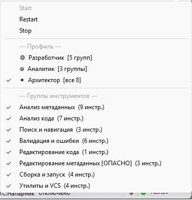
Индикатор статуса в нижней строке 1C:EDT
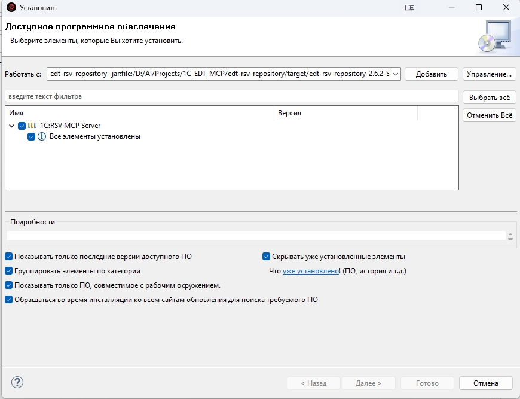
Стандартная установка через Help → Install New Software
LED-индикатор: зелёный — сервер активен
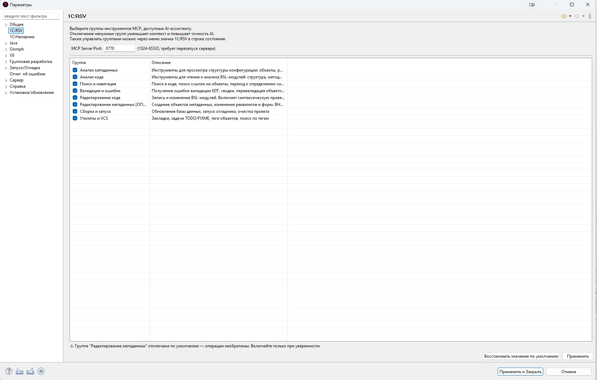
Настройки порта и параметров сервера
Инженерное качество
Разработано по высшим стандартам
1C:RSV — не прототип и не «хобби-проект». Это системное решение с профессиональной архитектурой, прошедшее независимое код-ревью.
🏗️
Профессиональная архитектура OSGi
51 Java-класс с чёткой модульной структурой
OSGi-бандл с корректным управлением жизненным циклом
Java 17 и стандарты Eclipse RCP / Tycho 4.0.5
Строгое разделение на слои: transport → dispatch → tools → API
🔗
Технологическая независимость
EMF-рефлексия вместо прямых зависимостей от EDT
В 2× компактнее аналогов при большей функциональности
0 внешних JAR-зависимостей (у аналогов — 3+)
Устойчивость к обновлениям платформы EDT
🔒
Безопасность по умолчанию
Только localhost (127.0.0.1) — никогда 0.0.0.0
Опасные инструменты отключены по умолчанию
Dry-run + подтверждение для всех деструктивных операций
Трёхуровневая защита для профиля Архитектор
⚡
Производительность и надёжность
CachedThreadPool + ThreadLocal-изоляция состояния
Пагинация больших ответов (offset/limit)
Ошибки возвращают JSON — EDT никогда не падает
Полная поддержка MCP Streamable HTTP 2025-11-25
🏆
«Решение обладает строгой модульной структурой, исключающей использование хардкода или временных костылей.
Весь код соответствует стандартам разработки Java 17 и OSGi-контейнеров. Архитектурные решения прошли
независимое профессиональное ревью и получили высокую оценку за качество реализации.»
— из технической документации проекта 1C:RSV
Установка
Готовы за 5 минут
Стандартная установка через менеджер плагинов 1C:EDT. Никаких сложных настроек окружения.
1
Скачать архив
Скачайте архив плагина по ссылке ниже или из Telegram-канала.
→
2
Установить в EDT
Справка → Установить новое ПО → Добавить → Архив → выберите ZIP → 1C:RSV MCP Server → Далее → Готово.
→
3
Настроить ИИ-ассистент
Добавьте в конфигурацию:
url: http://127.0.0.1:8770/mcp
→
4
Готово!
ИИ обнаружит 37 инструментов. Проверить:
curl localhost:8770/health
💡
Требования: 1C:EDT 2025.2 · Java 17 (Azul Zulu 17) · ИИ-ассистент с поддержкой MCP.
MCP-сервер запускается прямо внутри 1C:EDT на 127.0.0.1:8770 — без внешних серверов и SaaS-посредников. Данные конфигурации передаются напрямую вашему ИИ-ассистенту: Cursor, Claude Code или Windsurf используют их через свои облачные модели в штатном режиме.
Актуальная версия и подробная документация — в Telegram-канале ✈.
Конфигурация для Claude Code (~/.claude/claude_desktop_config.json)
Версия 2.7.0 · Для 1C:EDT 2025.x · Windows x64 · Бесплатно на 30 дней
📦
1C-RSV-MCP-2.7.1-distr.rar
Версия 2.7.1 · ~400 KB
✅ mcp-rsv-update-site-2.7.1.zip — плагин для установки в EDT✅ GUIDE.md — пошаговое руководство пользователя✅ CLAUDE.md — готовые правила для Claude / Cursor / Windsurf